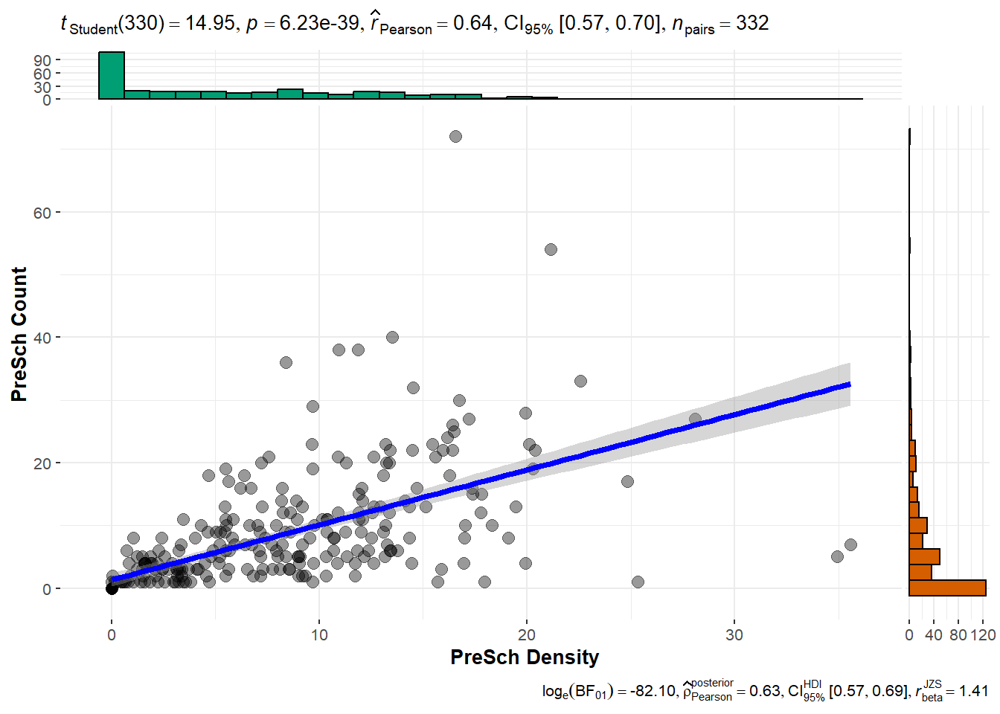
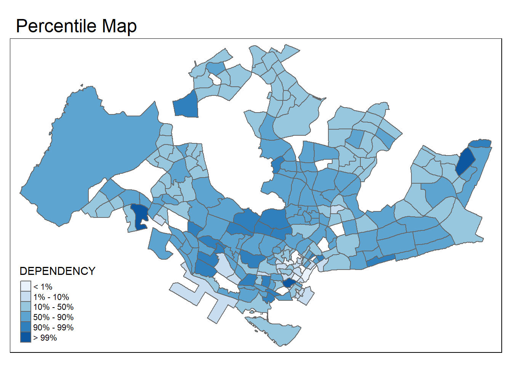

pacman::p_load(tidyverse, sf, tmap, ggstatsplot)In-Class Exercise 01
1. Getting Started
1.1 Loading the R Packages
This code chunk loads the R packages we require for this exercise:
1.2 Loading the Data
This code chunk imports the shapefile:
mpsz14_shp <- st_read(dsn = "data",
layer = "MP14_SUBZONE_WEB_PL")Reading layer `MP14_SUBZONE_WEB_PL' from data source
`C:\byebhai8\ISSS626-GeospatialAnalytics\In-Class_Ex\In-Class_Ex01\data'
using driver `ESRI Shapefile'
Simple feature collection with 323 features and 15 fields
Geometry type: MULTIPOLYGON
Dimension: XY
Bounding box: xmin: 2667.538 ymin: 15748.72 xmax: 56396.44 ymax: 50256.33
Projected CRS: SVY21This code chunk (should) import the kml file. However, since it’s corrupted we will not be using it.
# mpsz14_kml <- st_read("data/MasterPlan2014SubzoneBoundaryWebKML.kml")We could help GovTech by writing out a new kml file and send it back to them :)
#st_write(mpsz14_shp,
# "data/MP14_SUBZONE_WEB_PL.kml",
# delete_dsn = TRUE)This code chunk imports the Pre-Schools Location kml and geojson file and saves it in a sf simple data frame:
preschool_kml <- st_read("data/PreSchoolsLocation.kml")Reading layer `PRESCHOOLS_LOCATION' from data source
`C:\byebhai8\ISSS626-GeospatialAnalytics\In-Class_Ex\In-Class_Ex01\data\PreSchoolsLocation.kml'
using driver `KML'
Simple feature collection with 2290 features and 2 fields
Geometry type: POINT
Dimension: XYZ
Bounding box: xmin: 103.6878 ymin: 1.247759 xmax: 103.9897 ymax: 1.462134
z_range: zmin: 0 zmax: 0
Geodetic CRS: WGS 84preschool_geojson <- st_read("data/PreSchoolsLocation.geojson") Reading layer `PreSchoolsLocation' from data source
`C:\byebhai8\ISSS626-GeospatialAnalytics\In-Class_Ex\In-Class_Ex01\data\PreSchoolsLocation.geojson'
using driver `GeoJSON'
Simple feature collection with 2290 features and 2 fields
Geometry type: POINT
Dimension: XYZ
Bounding box: xmin: 103.6878 ymin: 1.247759 xmax: 103.9897 ymax: 1.462134
z_range: zmin: 0 zmax: 0
Geodetic CRS: WGS 84This code chunk imports the Master Plan 2019 shapefile:
mpsz19_shp <- st_read(dsn = "data/",
layer = "MPSZ-2019")Reading layer `MPSZ-2019' from data source
`C:\byebhai8\ISSS626-GeospatialAnalytics\In-Class_Ex\In-Class_Ex01\data'
using driver `ESRI Shapefile'
Simple feature collection with 332 features and 6 fields
Geometry type: MULTIPOLYGON
Dimension: XY
Bounding box: xmin: 103.6057 ymin: 1.158699 xmax: 104.0885 ymax: 1.470775
Geodetic CRS: WGS 84This code chunk imports the Master Plan 2019 kml file, However, I’m encountering an error with this line of code..
#mpsz19_kml <- st_read("data/MasterPlan2019SubzoneBoundaryNoSeaKML.kml")2. Handling Coordinate Systems
2.1 Verifying Coordinate System
This code chunk is used to check the project of the imported sf objects:
st_crs(mpsz19_shp)Coordinate Reference System:
User input: WGS 84
wkt:
GEOGCRS["WGS 84",
DATUM["World Geodetic System 1984",
ELLIPSOID["WGS 84",6378137,298.257223563,
LENGTHUNIT["metre",1]]],
PRIMEM["Greenwich",0,
ANGLEUNIT["degree",0.0174532925199433]],
CS[ellipsoidal,2],
AXIS["latitude",north,
ORDER[1],
ANGLEUNIT["degree",0.0174532925199433]],
AXIS["longitude",east,
ORDER[2],
ANGLEUNIT["degree",0.0174532925199433]],
ID["EPSG",4326]]From the above output, we know that it is using EPSG:4362 instead of EPSG:3414
2.2 Transforming Coordinate System
This code chunk helps to transform the coordinate system of Master Plan 2019 shapefile:
mpsz19_shp <- st_read(dsn = "data/",
layer = "MPSZ-2019") %>%
st_transform(crs = 3414)Reading layer `MPSZ-2019' from data source
`C:\byebhai8\ISSS626-GeospatialAnalytics\In-Class_Ex\In-Class_Ex01\data'
using driver `ESRI Shapefile'
Simple feature collection with 332 features and 6 fields
Geometry type: MULTIPOLYGON
Dimension: XY
Bounding box: xmin: 103.6057 ymin: 1.158699 xmax: 104.0885 ymax: 1.470775
Geodetic CRS: WGS 84This code chunk helps to transform the coordinate system of Pre-Schools Location kml file:
preschool <- st_read("data/PreSchoolsLocation.kml") %>%
st_transform(crs = 3414)Reading layer `PRESCHOOLS_LOCATION' from data source
`C:\byebhai8\ISSS626-GeospatialAnalytics\In-Class_Ex\In-Class_Ex01\data\PreSchoolsLocation.kml'
using driver `KML'
Simple feature collection with 2290 features and 2 fields
Geometry type: POINT
Dimension: XYZ
Bounding box: xmin: 103.6878 ymin: 1.247759 xmax: 103.9897 ymax: 1.462134
z_range: zmin: 0 zmax: 0
Geodetic CRS: WGS 843. Geospatial Data Wrangling
3.1 Point-in-Polygon Count
This code chunk is used to count the number of pre-schools in each planning sub-zone:
mpsz19_shp <- mpsz19_shp %>%
mutate(`PreSch Count` = lengths(
st_intersects(mpsz19_shp, preschool)))
mpsz19_shpSimple feature collection with 332 features and 7 fields
Geometry type: MULTIPOLYGON
Dimension: XY
Bounding box: xmin: 2667.538 ymin: 15748.72 xmax: 56396.44 ymax: 50256.33
Projected CRS: SVY21 / Singapore TM
First 10 features:
SUBZONE_N SUBZONE_C PLN_AREA_N PLN_AREA_C REGION_N
1 MARINA EAST MESZ01 MARINA EAST ME CENTRAL REGION
2 INSTITUTION HILL RVSZ05 RIVER VALLEY RV CENTRAL REGION
3 ROBERTSON QUAY SRSZ01 SINGAPORE RIVER SR CENTRAL REGION
4 JURONG ISLAND AND BUKOM WISZ01 WESTERN ISLANDS WI WEST REGION
5 FORT CANNING MUSZ02 MUSEUM MU CENTRAL REGION
6 MARINA EAST (MP) MPSZ05 MARINE PARADE MP CENTRAL REGION
7 SUDONG WISZ03 WESTERN ISLANDS WI WEST REGION
8 SEMAKAU WISZ02 WESTERN ISLANDS WI WEST REGION
9 SOUTHERN GROUP SISZ02 SOUTHERN ISLANDS SI CENTRAL REGION
10 SENTOSA SISZ01 SOUTHERN ISLANDS SI CENTRAL REGION
REGION_C geometry PreSch Count
1 CR MULTIPOLYGON (((33222.98 29... 0
2 CR MULTIPOLYGON (((28481.45 30... 1
3 CR MULTIPOLYGON (((28087.34 30... 6
4 WR MULTIPOLYGON (((14557.7 304... 0
5 CR MULTIPOLYGON (((29542.53 31... 0
6 CR MULTIPOLYGON (((35279.55 30... 0
7 WR MULTIPOLYGON (((15772.59 21... 0
8 WR MULTIPOLYGON (((19843.41 21... 0
9 CR MULTIPOLYGON (((30870.53 22... 0
10 CR MULTIPOLYGON (((26879.04 26... 4The new column (PreSch Count) has been added to the data frame as shown in the result output above.
3.2 Computing Density
The following code chunk can be used to: - Derive the area of each planning sub-zone - Drop the unit of measurement of the area - Calculate the density of pre-schools at the planning sub-zone level
mpsz19_shp <- mpsz19_shp %>%
mutate(Area = units::drop_units(
st_area(.)),
`PreSch Density` = `PreSch Count` / Area * 1000000
)
mpsz19_shpSimple feature collection with 332 features and 9 fields
Geometry type: MULTIPOLYGON
Dimension: XY
Bounding box: xmin: 2667.538 ymin: 15748.72 xmax: 56396.44 ymax: 50256.33
Projected CRS: SVY21 / Singapore TM
First 10 features:
SUBZONE_N SUBZONE_C PLN_AREA_N PLN_AREA_C REGION_N
1 MARINA EAST MESZ01 MARINA EAST ME CENTRAL REGION
2 INSTITUTION HILL RVSZ05 RIVER VALLEY RV CENTRAL REGION
3 ROBERTSON QUAY SRSZ01 SINGAPORE RIVER SR CENTRAL REGION
4 JURONG ISLAND AND BUKOM WISZ01 WESTERN ISLANDS WI WEST REGION
5 FORT CANNING MUSZ02 MUSEUM MU CENTRAL REGION
6 MARINA EAST (MP) MPSZ05 MARINE PARADE MP CENTRAL REGION
7 SUDONG WISZ03 WESTERN ISLANDS WI WEST REGION
8 SEMAKAU WISZ02 WESTERN ISLANDS WI WEST REGION
9 SOUTHERN GROUP SISZ02 SOUTHERN ISLANDS SI CENTRAL REGION
10 SENTOSA SISZ01 SOUTHERN ISLANDS SI CENTRAL REGION
REGION_C geometry PreSch Count Area
1 CR MULTIPOLYGON (((33222.98 29... 0 1844041.7
2 CR MULTIPOLYGON (((28481.45 30... 1 392563.3
3 CR MULTIPOLYGON (((28087.34 30... 6 506589.0
4 WR MULTIPOLYGON (((14557.7 304... 0 36639387.1
5 CR MULTIPOLYGON (((29542.53 31... 0 388733.2
6 CR MULTIPOLYGON (((35279.55 30... 0 1590339.9
7 WR MULTIPOLYGON (((15772.59 21... 0 4207271.1
8 WR MULTIPOLYGON (((19843.41 21... 0 4963787.2
9 CR MULTIPOLYGON (((30870.53 22... 0 2206353.6
10 CR MULTIPOLYGON (((26879.04 26... 4 4919832.8
PreSch Density
1 0.0000000
2 2.5473596
3 11.8439218
4 0.0000000
5 0.0000000
6 0.0000000
7 0.0000000
8 0.0000000
9 0.0000000
10 0.8130358The new columns (Area, PreSch Density) have been added to the data frame as shown in the result output above.
4. Statistical Analysis
By using Exploratory Data Analysis (EDA) and Confirmatory Data Analysis (CDA), we can explore and confirm the statistical relationship between Pre-School Density and Pre-School Count.
mpsz19_shp$`PreSch Density` <- as.numeric(as.character(mpsz19_shp$`PreSch Density`))
mpsz19_shp$`PreSch Count` <- as.numeric(as.character(mpsz19_shp$`PreSch Count`))
mpsz19_shp_new <- as.data.frame(mpsz19_shp)
ggscatterstats(data = mpsz19_shp_new,
x = `PreSch Density`,
y = `PreSch Count`,
type = "parametric")Registered S3 method overwritten by 'ggside':
method from
+.gg ggplot2`stat_bin()` using `bins = 30`. Pick better value with `binwidth`.
`stat_bin()` using `bins = 30`. Pick better value with `binwidth`.
5. Population Data
5.1 Loading the Data
The code chunk below is used to load the Singapore Residents by Planning Area / Subzone, Age Group, Sex and Type of Dwelling data from Singtat:
popdata <- read_csv("data/respopagesextod2023.csv")Rows: 100928 Columns: 7
── Column specification ────────────────────────────────────────────────────────
Delimiter: ","
chr (5): PA, SZ, AG, Sex, TOD
dbl (2): Pop, Time
ℹ Use `spec()` to retrieve the full column specification for this data.
ℹ Specify the column types or set `show_col_types = FALSE` to quiet this message.5.2 Data Wrangling
The code chunk below is used to prepare a data frame showing the population by Planning Area and Planning Subzone:
popdata2023 <- popdata %>%
group_by(PA, SZ, AG) %>%
summarise(`POP`=sum(`Pop`)) %>%
ungroup() %>%
pivot_wider(names_from=AG,
values_from = POP)`summarise()` has grouped output by 'PA', 'SZ'. You can override using the
`.groups` argument.colnames(popdata2023) [1] "PA" "SZ" "0_to_4" "10_to_14" "15_to_19"
[6] "20_to_24" "25_to_29" "30_to_34" "35_to_39" "40_to_44"
[11] "45_to_49" "50_to_54" "55_to_59" "5_to_9" "60_to_64"
[16] "65_to_69" "70_to_74" "75_to_79" "80_to_84" "85_to_89"
[21] "90_and_Over"5.3 Data Processing
The code chunk below achieves the following logic: - YOUNG: age group 0 to 4 until age group 20 to 24 - ECONOMY ACTIVE: age group 25-29 until age group 60-64 - AGED: age group 65 and above - TOTAL: all age groups - DEPENDENCY; the ratio between young and aged against the economy active group
popdata2023 <- popdata2023 %>%
mutate(YOUNG=rowSums(.[3:6]) # Aged 0 - 24, 10 - 24
+rowSums(.[14])) %>% # Aged 5 - 9
mutate(`ECONOMY ACTIVE` = rowSums(.[7:13])+ # Aged 25 - 59
rowSums(.[15])) %>% # Aged 60 -64
mutate(`AGED`=rowSums(.[16:21])) %>%
mutate(`TOTAL`=rowSums(.[3:21])) %>%
mutate(`DEPENDENCY`=(`YOUNG` + `AGED`)
/ `ECONOMY ACTIVE`) %>%
select(`PA`, `SZ`, `YOUNG`,
`ECONOMY ACTIVE`, `AGED`,
`TOTAL`, `DEPENDENCY`)Let’s take a look at the transformed data frame:
popdata2023# A tibble: 332 × 7
PA SZ YOUNG `ECONOMY ACTIVE` AGED TOTAL DEPEND…¹
<chr> <chr> <dbl> <dbl> <dbl> <dbl> <dbl>
1 Ang Mo Kio Ang Mo Kio Town Centre 1240 2830 890 4960 0.753
2 Ang Mo Kio Cheng San 5150 15600 6580 27330 0.752
3 Ang Mo Kio Chong Boon 4620 14120 7060 25800 0.827
4 Ang Mo Kio Kebun Bahru 4320 12400 5640 22360 0.803
5 Ang Mo Kio Sembawang Hills 1840 3670 1420 6930 0.888
6 Ang Mo Kio Shangri-La 3810 9600 4320 17730 0.847
7 Ang Mo Kio Tagore 1870 4320 1790 7980 0.847
8 Ang Mo Kio Townsville 3750 11090 5390 20230 0.824
9 Ang Mo Kio Yio Chu Kang 0 0 0 0 NaN
10 Ang Mo Kio Yio Chu Kang East 1090 2410 880 4380 0.817
# … with 322 more rows, and abbreviated variable name ¹DEPENDENCY5.4 Joining Data
The code chunk below is used to join the popdata2023 with the mpsz19_shp data:
popdata2023 <- popdata2023 %>%
mutate_at(.vars = vars(PA, SZ),
.funs = list(toupper))
mpsz_pop2023 <- left_join(mpsz19_shp, popdata2023,
by = c("SUBZONE_N" = "SZ"))
pop2023_mpsz <- left_join(popdata2023, mpsz19_shp,
by = c("SZ" = "SUBZONE_N"))6. Analytical Maps
6.1 Percentile Map
The percentile map is a special type of quantile map with six specific categories: 0-1%,1-10%, 10-50%,50-90%,90-99%, and 99-100%. The corresponding breakpoints can be derived by means of the base R quantile command, passing an explicit vector of cumulative probabilities as c(0,.01,.1,.5,.9,.99,1). Note that the begin and endpoint need to be included.
Step 1: Data Preparation The code chunk below helps to exclude records with NA:
mpsz_pop2023 <- mpsz_pop2023 %>%
drop_na()Step 2: get function The code chunk below defines a function to get the input data and field that is to be used to create the percentile map:
get.var <- function(vname, df) {
v <- df[vname] %>% st_set_geometry(NULL)
v <- unname(v[,1]) # unlist(v)
return(v)
}mpsz19_shpSimple feature collection with 332 features and 9 fields
Geometry type: MULTIPOLYGON
Dimension: XY
Bounding box: xmin: 2667.538 ymin: 15748.72 xmax: 56396.44 ymax: 50256.33
Projected CRS: SVY21 / Singapore TM
First 10 features:
SUBZONE_N SUBZONE_C PLN_AREA_N PLN_AREA_C REGION_N
1 MARINA EAST MESZ01 MARINA EAST ME CENTRAL REGION
2 INSTITUTION HILL RVSZ05 RIVER VALLEY RV CENTRAL REGION
3 ROBERTSON QUAY SRSZ01 SINGAPORE RIVER SR CENTRAL REGION
4 JURONG ISLAND AND BUKOM WISZ01 WESTERN ISLANDS WI WEST REGION
5 FORT CANNING MUSZ02 MUSEUM MU CENTRAL REGION
6 MARINA EAST (MP) MPSZ05 MARINE PARADE MP CENTRAL REGION
7 SUDONG WISZ03 WESTERN ISLANDS WI WEST REGION
8 SEMAKAU WISZ02 WESTERN ISLANDS WI WEST REGION
9 SOUTHERN GROUP SISZ02 SOUTHERN ISLANDS SI CENTRAL REGION
10 SENTOSA SISZ01 SOUTHERN ISLANDS SI CENTRAL REGION
REGION_C geometry PreSch Count Area
1 CR MULTIPOLYGON (((33222.98 29... 0 1844041.7
2 CR MULTIPOLYGON (((28481.45 30... 1 392563.3
3 CR MULTIPOLYGON (((28087.34 30... 6 506589.0
4 WR MULTIPOLYGON (((14557.7 304... 0 36639387.1
5 CR MULTIPOLYGON (((29542.53 31... 0 388733.2
6 CR MULTIPOLYGON (((35279.55 30... 0 1590339.9
7 WR MULTIPOLYGON (((15772.59 21... 0 4207271.1
8 WR MULTIPOLYGON (((19843.41 21... 0 4963787.2
9 CR MULTIPOLYGON (((30870.53 22... 0 2206353.6
10 CR MULTIPOLYGON (((26879.04 26... 4 4919832.8
PreSch Density
1 0.0000000
2 2.5473596
3 11.8439218
4 0.0000000
5 0.0000000
6 0.0000000
7 0.0000000
8 0.0000000
9 0.0000000
10 0.8130358Step 3: Percentile Mapping function The code chunk below creates a function for computing and plotting the percentile map:
percentmap <- function(vnam, df, legtitle=NA, mtitle="Percentile Map"){
percent <- c(0,.01,.1,.5,.9,.99,1)
var <- get.var(vnam, df)
bperc <- quantile(var, percent)
tm_shape(mpsz_pop2023) +
tm_polygons() +
tm_shape(df) +
tm_fill(vnam,
title=legtitle,
breaks=bperc,
palette="Blues",
labels=c("< 1%", "1% - 10%", "10% - 50%", "50% - 90%", "90% - 99%", "> 99%")) +
tm_borders() +
tm_layout(main.title = mtitle,
title.position = c("right","bottom"))
}Step 4: Running the functions The code chunk below runs the percentile map function:
percentmap("DEPENDENCY", mpsz_pop2023)